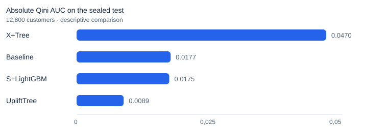
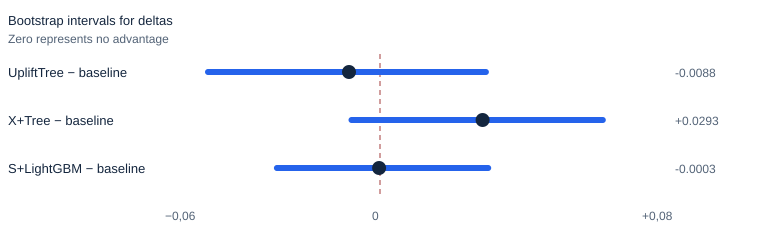
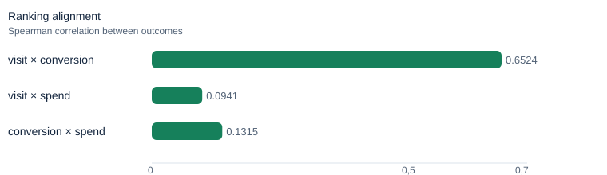

Causal targeting with explicit evidence and boundaries
A modular pipeline to estimate who benefits from a campaign, with a sealed test, preregistered comparison and budget-constrained contact policies.
64,000 randomized customers · 8 notebook pairs · persisted S6–S9 evaluation
The target is incremental effect, not propensity
A propensity ranking finds who is likely to respond. Uplift modeling asks who responds because of the campaign. This project uses the randomized Hillstrom experiment to test that distinction while preserving a conservative decision boundary.
Main reading: The primary result is null; the defensible next step is a prospective pilot, not deployment.
The primary comparison was frozen before the test
Development uses a deterministic 60%/20%/20% split, visit as primary outcome and frozen candidates. S6 evaluated UpliftTree against the propensity baseline on the 12,800-customer sealed test with 2,000 paired bootstrap samples.


The interval includes zero
The primary difference was Δ Qini AUC = −0.0088, with 95% CI [−0.0492; 0.0302]. The sealed evidence therefore does not demonstrate confirmatory superiority of UpliftTree over baseline. X+Tree's absolute Qini is descriptive and does not create a retrospectively promoted winner.
S6 decision: ci_includes_zero → there is no confirmatory evidence of advantage.
Visit ranking does not represent revenue
Spearman correlation between visit and spend rankings is 0.0941. Later analyses, policies and ROI are exploratory and depend on illustrative costs and margins.

The narrative is in notebooks; the logic lives in src/
The eight PT/EN pairs reuse modules for data, features, splits, learners, evaluation, policies and reports. S6–S9 consume persisted artifacts without reopening the sealed test or selecting a retrospective champion.
Shared modules
src/data.py,features.py,splits.pysrc/learners.py,evaluation.pysrc/policy.py,reports.pytests/test_suite.pyand S6–S9 artifacts
Analytical order
- 01–04: EDA, baseline and candidates
- 05: preregistered sealed test
- 06–09: heterogeneity, policy, ROI and robustness
- PT-BR is canonical; EN-US is equivalent.
Allowed use and limits
It can support
- Learning and hypothesis generation.
- Prospective randomized pilot design.
- Simulations with replaceable assumptions.
It cannot support
- Confirmatory superiority of a candidate.
- Automatic policy deployment.
- Validated ROI from illustrative costs.
Decision boundary: not_ready_for_direct_deployment. Before a pilot: freeze the policy, prespecify the outcome, assess power, use real costs and monitor fatigue, opt-outs, deliverability and capacity.
Sources and reproduction
This page is a communication layer. Versioned notebooks, modules and artifacts remain the executable source of truth.